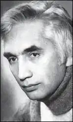

Еміль Аміт (1938-2002) — талановитий прозаїк, перекладач.
Еміль Аміт народився в Сімферополі в родині відомого кримськотатарського поета Османа Аміта (залишеного в окупації за спеціальним завданням, але схопленого гестапівцями і розстріляного в 1942 році) та вчительки Зелихи з села Кутлак Судацького району.
Під час переселення шестирічний Еміль з матір'ю і бабусею потрапили в Самаркандську область. Дві беззахисні жінки і хлопчик перенесли голод та холод, найстрашніші негаразди, але дивом залишилися живі. І трагедію рідного народу Еміль Аміт виплеснув на сторінки своїх книг, описав його долю гаряче, жваво, до сліз пронизливо, талановито, алегорично — за часів тоталітарного режиму правда про кримськотатарський народ була під забороною. Після закінчення школи, він працював токарем але дуже мріяв стати льотчиком. Коли він вступив до льотного училища, але його як кримського татарина відрахували з училища. В 1959 році, повернувшись до Ташкента, він поступає в педінститут на факультет російської мови та літератури. У роки навчання Еміль Аміт написав свої перші оповідання. Після другого курсу інституту відомий письменник Шаміль Алядін допоміг йому, Ервіну Умерову, Нузету Умерову в надходженні в московський Літературний інститут ім. М. Горького. Ці троє молодих людей, майбутні письменники, згодом з честю представили кримськотатарський народ в літературі. Після закінчення вузу Еміль Аміт в 1965 році прийшов працювати до редакції газети "Ленін байраг'и" в Ташкенті, через кілька років знову поїхав до Москви, багато років працював у видавництві "Радянський письменник", займався художніми перекладами, перевів ряд творів видатних узбецьких і інших авторів російською мовою. В останні роки життя працював перекладачем в тюркомовної газеті "Заман" (Москва). Еміль Аміт увійшов в літературу як прозаїк. Свої перші оповідання він писав ще будучи в школі. Писав він в основному російською мовою, але майже всі його твори перекладені і опубліковані і кримськотатарською мовою. Його книги: збірка оповідань "Учуримли їв" ("Дорога над кручею") — 1971, збірка оповідань і повістей "Севгіден кучьлю" ("Сильніше за любов") — 1973 збірка повістей "Буюк арзунен" ("З великою мрією") — 1978, повість "Сиг'ин чок'рагьи" ("Оленяче джерело") — 1982, роман "Ішанч" ( "Останній шанс") — 1986 і ін. — видано кримськотатарською, російською та українською мовами. У своїх творах Еміль Аміт, як ніхто інший, зумів відбити долю і трагедію свого народу. Тому вони незмінно з інтересом приймалися читачами. Творчість Еміля Аміта зайняло гідне місце в сучасній кримськотатарській літературі. Еміль Аміт успішно виступав і як перекладач. Їм переведені на російську мову твори цілого ряду видатних письменників Узбекистану, Туркменістану, Татарстану, а також твори Шаміля Алядіна, Черкеза-Алі і ін. А твори самого Еміля Аміта переведені на узбецьку, азербайджанську і румунську мови. Прозаїк Еміль Аміт залишив нам і поетичний твір під назвою "Моєму дідові". Вірш "Моєму дідові" — це сумні роздуми про долю кримськотатарського народу. Автор тут згадує про те, як в чужій, далекій стороні помирав його дід, вмирав не від старості — від туги за рідною землею. Він говорить з онуком тільки поглядом, адже мова вже не корилася йому. Але як можуть говорити очі ... Старий заповідає онуку любити рідну землю, розповідає хлопчикові про красу його батьківщини. Йому хочеться, щоб дитина завжди пам'ятала своє ім'я — Шаїн (Сокіл), пам'ятав, звідки він родом, знав про трагічну долю своєї родини. Незважаючи на перенесені страждання, старий татарин, перемагаючи біль, борючись з підступаючої смертю, заповідає Шаїн рости справжнім джигітом "з відкритим серцем і обличчям відкритим". Вірш передає глибину душевних переживань автора, щирість його почуттів. Він викликає у читача співчуття до невинно страждав народу. І в той же час поетичні рядки сповнені вірою в перемогу справедливості: Помер Еміль Аміт після важкої хвороби 28 березня 2002 року в Москві. Похованиий на Холанському кладовищі.